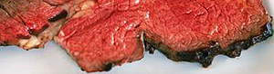

Rindsfilet an Rotweinsauce
5 von 6fleisch:
mit salz und pfeffer besträuen und kräftig anbraten. danach bei 80 grad
(75 ist eindeutig zu wenig) im ofen 1,5 std. garen.
sauce:
0.5 l rotwein bis auf 1/5 einkochen. in der gusseisenbratpfanne mit portwein (hatten wir leider nicht)
den bratensatz auflösen und ein wenig einkochen. butter und ein wenig rahm beigeben. würzen.
